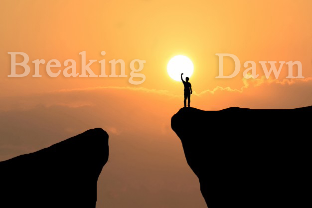

It’s been a very stressful but interesting week. The myriad of issues that came up this week was so overwhelming that I almost postponed today’s post to next week. But hey! I remembered that I do have cherished readers who are always eager to read the next post. I promise I will not disappoint today or ever. Without much ado let’s just streak right into business!
The first thing that this topic brings to mind is the movie TWILIGHT! I love that movie very much. Breaking dawn is my favorite of the twilight movies. It shows how Bella broke all odds to become a vampire from a human, which is a great feat per the story line. Before morning comes, there is dawn which is a transition from the previous night to the next morning. Last week we spoke about battling addictions. (Please read I CAN’T STOP, HELP!-the previous post). Specifically, I shared my friend’s story of how she suffered addiction to pornography and I know that most us(the youth) can relate to this. As promised, today we shall look at some of the ways by which we can break out of such an addiction, we are going to take steps to breaking the dawn and walking into our glorious morning free as birds!
“Pornography temptations is difficult, but you can find freedom! Your first step is to find an accountability partner. A good partner is there to remind you of the person you want to be. A good partner is not merely someone who can merely call you out of sin but someone who can call you up to the better person you want to become. James 5:16 is a classic creed of accountability relationships. In your first conversation with your partner, talk about the problem you are facing. Mind you, your partner must be someone spiritually sound and grounded in God’s word and most importantly someone you can trust. Tell whomever your partner may be about your struggles and your desire to break free.
These are certainly not the only things to do to break free. There are more, but I am positive that the few that I have shared with you here will be a start towards breaking your dawn. Don’t give up! You’ll once in a while fall back again but do not let that hinder you from becoming who you want to be in Christ Jesus. Remember, that freedom is one day at a time!
How can a young person stay on the path of purity? By living according to your word. (Psalm 119:9)
